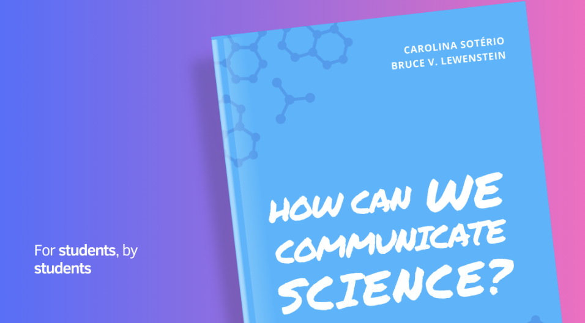

UX Research and Instructional Design
This participatory guidebook is the first of its kind—a student-centered resource designed to bridge the gap between science communication theory and practice. Combining UX research, instructional design, and design thinking, it addresses the unique challenges and aspirations of STEM students, empowering them to communicate science effectively in real-world contexts. Students and practitioners co-created the guidebook, ensuring it meets real-world needs and drives meaningful engagement.

How the Guidebook Was Built
The guidebook was developed using a design thinking approach, ensuring it addresses real-world challenges and meets the needs of its users. Here’s how the process unfolded:
- Empathize: We conducted workshops and interviews with students, educators, and practitioners to understand their challenges, aspirations, and learning goals in science communication.
- Define: Based on their feedback, we framed the guidebook around the six journalism questions—Who, What, When, Where, Why, and How—creating a clear and intuitive structure for learning.
- Ideate: Collaborating with participants, we brainstormed content, interactive elements, and real-world scenarios to make the guidebook engaging and practical.
- Prototype: We created a modular guidebook with activities, templates, and multimedia examples, integrating published media excerpts and participant reflections.
- Test: The guidebook was refined through iterative feedback, ensuring it effectively bridges the gap between theory and practice.
What Makes It Unique
- Interactive and Practical: Activities, templates, and multimedia examples help users apply what they learn.
- Inclusive and Collaborative: Diverse scenarios and reflections ensure relevance for a wide range of users.
- Innovative and Engaging: The use of case studies and participatory design makes the guidebook dynamic and inspiring.
Outcomes
The guidebook empowers students to develop confidence and skills in science communication, bridging the gap between theory and practice. It fosters real-world engagement, helping users see themselves as science communicators and equipping them to address societal challenges through effective communication.